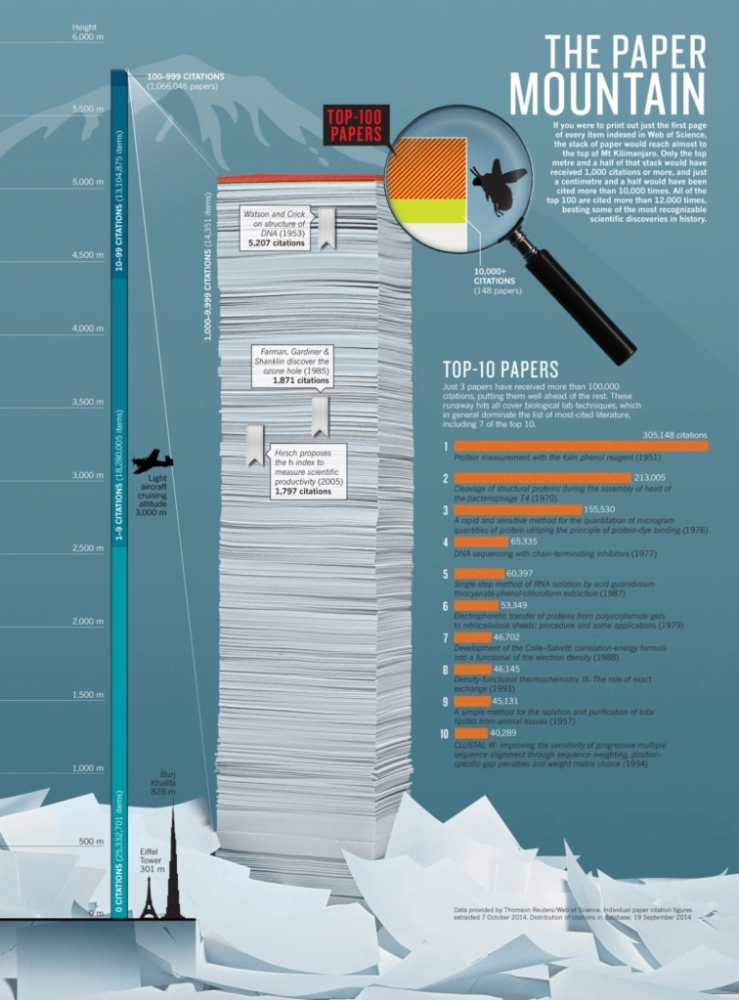
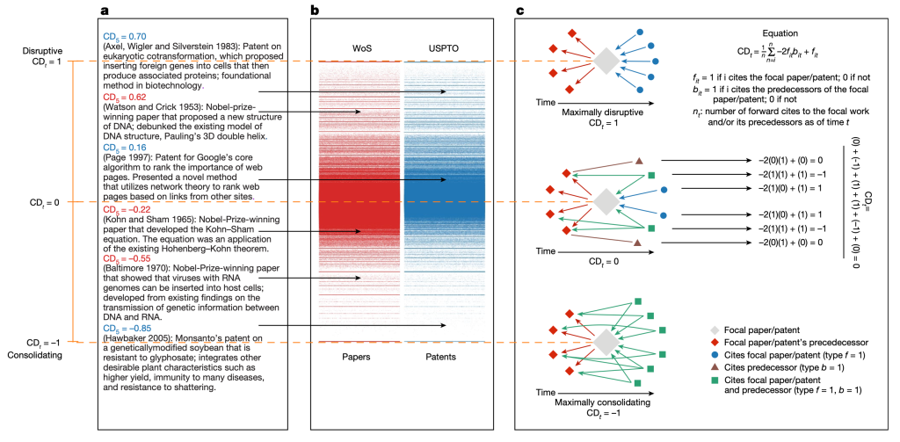
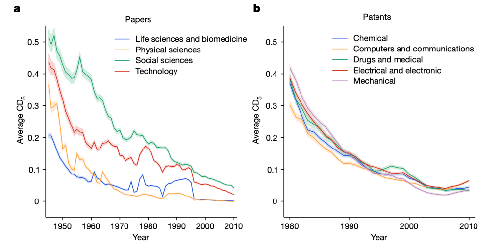

Towards systematically better returns from science funding
Published on June 05, 2024
This essay pieces together some of the writing and academic literature on the slowdown in scientific progress and attempts to devise a tangible solution to address the issue at the margin. If you’re already familiar with the literature (and the literati), I’d advise only skimming the first three sections.
1.
Much has been said over the past decade or so about the slowdown in the rate of development and deployment of epochal technological and scientific breakthroughs. I don’t wish to repeat those statements here, but the following passages from Jason Crawford’s comprehensive review capture the general sentiment well:
‘The “second Industrial Revolution”, from the mid-1800s to the mid-1900s, is characterized by a greater influence of science: mainly chemistry, electromagnetism, and microbiology. Applied chemistry gave us better materials, from Bessemer steel to plastic, and synthetic fertilizers and pesticides. It also gave us processes to refine petroleum, enabling the oil boom; this led to the internal combustion engine, and the vehicles based on it—cars, planes, and oil-burning ships—that still dominate transportation today. Physics gave us the electrical industry, including generators, motors, and the light bulb; and electronic communications, from the telegraph and telephone through radio and television. And biology gave us the germ theory, which dramatically reduced infectious disease mortality rates through improvements in sanitation, new vaccines, and towards the end of this period, antibiotics. So every single one of the six major categories was completely transformed.
Since then, the “third Industrial Revolution”, starting in the mid-1900s, has mostly seen fundamental advances in a single area: electronic computing and communications. If you date it from 1970, there has really been nothing comparable in manufacturing, agriculture, energy, transportation, or medicine—again, not that these areas have seen zero progress, simply that they’ve seen less-than-revolutionary progress. Computers have completely transformed all of information processing and communications, while there have been no new types of materials, vehicles, fuels, engines, etc. The closest candidates I can see are containerization in shipping, which revolutionized cargo but did nothing for passenger travel; and genetic engineering, which has given us a few big wins but hasn’t reached nearly its full potential yet.’
Consider, alongside those words, the titular chart from Patrick Collison and Michael Nielsen’s analysis of the diminishing productivity of scientific researchers and the ensuing picture is quite bleak. Academia and industry have grown to occupy multiple orders of magnitude more scientists and generally highly trained and skilled talent (note also that their chart does not consider talent from China or anywhere else but the US), and the results are limited to marginal progress on the epochal breakthroughs of generations past (with some exceptions, namely in information technology and, to a lesser extent, biotechnology). Bloom, Jones, Reenan, and Webb (2018) tied it all together elegantly and effectively arrived at the same conclusion.
Given that only such transformative developments can fulfill the promise of unfettered and perpetual productivity – and, consequently, economic – growth, this is quite the cause for concern.
2.
Peter Thiel and others have pointed out that, in some industries, stringent regulatory requirements have played an important role in curtailing the impact of the capitalistic motive. Education, healthcare, and real estate/construction (?) are all candidates here. Taken together, they would be the biggest GDP segment, by a wide margin, for most countries. Eliminating bureaucratic barriers to innovation seems like low-hanging fruit for spurring progress. More on this later.
Most often though, people respond to this question with claims about the depletion of the stock of viable ideas. The claim is that we’ve exhausted all the low-hanging fruit and subsequent ideas ought to take more effort just by virtue of their increasing complexity. Scott Alexander:
‘…constant progress in science in response to exponential increases in inputs ought to be our null hypothesis, and that it’s almost inconceivable that it could ever be otherwise.
Consider a case in which we extend these graphs back to the beginning of a field. For example, psychology started with Wilhelm Wundt and a few of his friends playing around with stimulus perception. Let’s say there were ten of them workingfor one generation, and they discovered ten revolutionary insights worthy of their own page in Intro Psychology textbooks. Okay. But now there are about a hundred thousand experimental psychologists. Should we expect them to discover a hundred thousand revolutionary insights per generation?
Or: the economic growth rate in 1930 was 2% or so. If it scaled with number of researchers, it ought to be about 50% per year today with our 25x increase in researcher number. That kind of growth would mean that the average person who made $30,000 a year in 2000 should make $50 million a year in 2018.
Or: in 1930, life expectancy at 65 was increasing by about two years per decade. But if that scaled with number of biomedicine researchers, that should have increased to ten years per decade by about 1955, which would mean everyone would have become immortal starting sometime during the Baby Boom, and we would currently be ruled by a deathless God-Emperor Eisenhower.’
Intuitively, this makes some sense. We’ve already discovered fire, shaped stones and logs into wheels, invented the printing press, and built the internet. We are increasingly better satisfied and the bar for new stuff to achieve adoption is higher than ever.
Evidence pointing at the “burden of knowledge” – that scientists’ decreasing productivity can be explained by their having more to learn and understand – illustrates this well. Nobel Prize winners are getting older, scientific teams are getting bigger, papers cite more than they used to, and young scientists spend more time than ever attaining their educational credentials.
Despite all that, the faster horses theory of innovation isn’t entirely compelling.[1] Human wants and needs are still infinitely extensible despite technology’s irrevocable lurches (or are they?), and there doesn’t appear to be a binding constraint on a single person’s ability to discover something that fills, partly, that ocean. Sure, we may not invent a communication paradigm better than the internet but communication isn’t the only axis left to innovate upon. Nor are rolling objects or atomic physics or elemental chemistry. Paper and combustion, of course, offer great case studies of this notion. Scott again:
‘All of these lines of evidence lead me to the same conclusion: constant growth rates in response to exponentially increasing inputs is the null hypothesis. If it wasn’t, we should be expecting 50% year-on-year GDP growth, easily-discovered-immortality, and the like. Nobody expected that before reading BJRW, so we shouldn’t be surprised when BJRW provide a data-driven model showing it isn’t happening. I realize this in itself isn’t an explanation; it doesn’t tell us why researchers can’t maintain a constant level of output as measured in discoveries. It sounds a little like “God wouldn’t design the universe that way”, which is a kind of suspicious line of argument, especially for atheists. But it at least shifts us from a lens where we view the problem as “What three tweaks should we make to the graduate education system to fix this problem right now?” to one where we view it as “Why isn’t Marcus Aurelius immortal?”’ (emphasis added)
3.
Even if it is the case that constant progress in science mandates an (exponential or otherwise) increase in input resources, it isn’t entirely obvious that our current allocation methods are perfectly optimal. Indeed, there’s plenty of evidence to the contrary, and they all hint at major structural issues in the way we do science and development across industry and academia.
Consider, for instance, a scenario where yearly global academic output drops by 80% or so. How noticeable would this reduction be? Will the world rue the lack of new knowledge or will we fail to notice, a year or ten or fifty from now?
Let’s see. For starters, 82% of humanities articles are never cited. This number drops to 27% for the natural sciences, 32% for social sciences, and 12% for medical studies. That’s not quite 80% – not nearly close, the amount of research funding and the number of researchers in those fields rises roughly in that order as well – but taking into account the power law of citation curves and the questionable accuracy of even highly cited papers, it does seem fair to say that most papers provide minimal utility, if any at all.
Ignoring citation counts entirely, analysis of the current stock of scholarly articles also seems to indicate a dearth of disruptive and novel ideas. Park, Leahy and Funk (2023) analyze citation patterns and establish a quantitative measure, the CD index, that – in their opinion – is a proxy for whether papers are consolidating or disruptive.
A paper or patent is considered disruptive if ‘the subsequent work that cites it is less likely to also cite its predecessors; for future researchers, the ideas that went into its production are less relevant’, and consolidating if the ‘subsequent work that cites it is also more likely to cite its predecessors; for future researchers, the knowledge upon which the work builds is still (and perhaps more) relevant.’ Higher scores on the [-1,+1] range indicate that a paper is more disruptive.
They uncover broad and systemic decline in the CD index across fields, with their headline conclusion reading, ‘Across fields, we find that science and technology are becoming less disruptive.’
Notably:
‘For papers, since about 1980, the rate of decline has been more modest in ‘life sciences and biomedicine’ and physical sciences, and most marked and persistent in social sciences and ‘technology’. Overall, however, relative to earlier eras, recent papers and patents do less to push science and technology in new directions. The general similarity in trends we observe across fields is noteworthy in light of ‘low-hanging fruit’ theories, which would probably predict greater heterogeneity in the decline, as it seems unlikely fields would ‘consume’ their low-hanging fruit at similar rates or times‘ (emphasis added)
Most bylines that showcased the paper ended their coverage here, despite the paper containing more interesting observations that help frame the broader picture better. For instance:
‘The aggregate trends we document mask considerable heterogeneity in the disruptiveness of individual papers and patents and remarkable stability in the absolute number of highly disruptive works. Specifically, despite large increases in scientific productivity, the number of papers and patents with CD5 values in the far right tail of the distribution remains nearly constant over time. This ‘conservation’ of the absolute number of highly disruptive papers and patents holds despite considerable churn in the underlying fields responsible for producing those works. These results suggest that the persistence of major breakthroughs—for example, measurement of gravity waves and COVID-19 vaccines—is not inconsistent with slowing innovative activity. In short, declining aggregate disruptiveness does not preclude individual highly disruptive works.’ (emphasis added)
Also:
‘…we considered the possibility that the availability of knowledge may differ from its use. In particular, the growth in publishing and patenting may lead scientists and inventors to focus on narrower slices of previous work, thereby limiting the ‘effective’ stock of knowledge. Using three proxies, we document a decline in the use of previous knowledge among scientists and inventors. First, we see a decline in the diversity of work cited, indicating that contemporary science and technology are engaging with narrower slices of existing knowledge. Moreover, this decline in diversity is accompanied by an increase in the share of citations to the 1% most highly cited papers and patents, which are also decreasing in semantic diversity. Over time, scientists and inventors are increasingly citing the same previous work, and that previous work is becoming more topically similar. Second, we see an increase in self-citation, a common proxy for the continuation of one’s pre-existing research stream, which is consistent with scientists and inventors relying more on highly familiar knowledge. Third, the mean age of work cited, a common measure for the use of dated knowledge, is increasing, suggesting that scientists and inventors may be struggling to keep up with the pace of knowledge expansion and instead relying on older, familiar work. All three indicators point to a consistent story: a narrower scope of existing knowledge is informing contemporary discovery and invention.’ (emphasis added)
Is this indicative of a knowledge burden or, more appropriately, knowledge fatigue? Perhaps. It could also be a consequence of funding homogeneity, which we’ll get to in a bit. They conclude:
‘We attribute this trend in part to scientists’ and inventors’ reliance on a narrower set of existing knowledge. Even though philosophers of science may be correct that the growth of knowledge is an endogenous process—wherein accumulated understanding promotes future invention—engagement with a broad range of extant knowledge is necessary for that process to play out, a requirement that appears more difficult with time. Relying on narrower slices of knowledge benefits individual careers, but not scientific progress more generally.’
The steady incidence of disruptive research conducted by a small proportion of scientists seems to lend credence to the idea of inefficient R&D capital allocation. For a more concrete example, think of NASA and SpaceX. NASA held the lead in tacit knowledge for decades before the private company’s incorporation, and it still boasts a greater R&D budget today.
Yet, it cannot (or, is unwilling to) replicate SpaceX’s successes.
Sticking in the Elonverse, his attempt to remake Twitter in his image involved an ~80% reduction in the workforce. For most intents and purposes, Twitter seems alright, and, by some metrics, it’s better than ever. What were all those people doing?
Or consider the recent boom in Artificial Intelligence: Spending in the same order of magnitude of small national GDPs was triggered not by the exceedingly large research and development arms inside Big Tech companies but by a 250-person startup in San Francisco.
‘Satya Nadella didn’t want to hear it.
Last December, Peter Lee, who oversees Microsoft’s sprawling research efforts, was briefing Nadella, Microsoft’s CEO, and his deputies about a series of tests Microsoft had conducted of GPT-4, the then-unreleased new artificial intelligence large-language model built by OpenAI. Lee told Nadella Microsoft’s researchers were blown away by the model’s ability to understand conventional language and generate humanlike answers, and they believed it showed sparks of Artificial General Intelligence – capabilities on par with those of a human mind.
Nadella abruptly cut off Lee midsentence, demanding to know OpenAI had managed to surpass the capabilities of the AI project Microsoft’s 1,500-person research team had been working on for decades. “OpenAI built this with 250 people,” Nadella said, according to Lee, who is executive vice president and head of Microsoft Research.
“Why do we have Microsoft Research at all?”’
The Information, How Microsoft Swallowed Its Pride to Make a Massive Bet on OpenAI
4.
While corporations – including the near-monopolies – are subject to the rules of capitalism and competition, no such grounding incentive exists in the context of university-centric academic research. Worse, current grantmaking policies and incentives might mean that the most promising projects are penalized.
Researchers working in a university- or university-adjacent context also (are supposed to) conduct a greater proportion of the exploratory research – the most fundamental process of knowledge discovery – whose benefits are greater and which diffuse further and cheaper compared to the tinkering on minor product improvements that dominate the industrial context. This funding’s effectiveness matters quite a bit.
Universities weren’t always so rudderless and free of anything resembling a guiding incentive. Eric Gilliam of the FreakTakes Substack – whose work this piece draws upon more than any other – offers tremendous insight into the origins, growth and management strategies of the immensely productive 20th-century American research groups. He writes, detailing the state of American research at that time:
‘Pre-1950, the federal government was not anywhere near the behemoth university research funder that they are now (I go into this in-depth in my previous post). From 1909 to 1939, federal funding was somewhere between 4% to 7% of university revenue. Instead, universities relied heavily on state and industry funding.
Their share of revenue from state funding in this period was closer to 20% to 30%. In return for heavy state funding, research universities developed specialties that were specific to the industrial activity of their state. Examples of thisinclude the University of Oklahoma pioneering innovations in petroleum engineering such as reflection seismology and the University of Illinois producing cutting-edge research in crop production that was actionable for regular farmers.
Many of the best universities also relied heavily on industry partners and contracts for funding. This was in both the form of industry-sponsored labs and studies to produce research directly related to the industry’s work or through “consulting” contracts. These consulting contracts were not seen as the sideshows to the actual teaching and research that they are today. Rather, they were seen as opportunities for the professor to produce useful and exciting research, stay sharp on how industry was actually functioning so they could better train the university students, and make the professors and their universities much needed income. Another major incentive was that exciting research often required expensive equipment that was much more abundant in industrial laboratories than academic ones.’
Simply put, universities had to earn their pay. MIT funded itself out of an economic malaise post World War I by fulfilling seemingly every technical enterprise contract [“The Technology Plan”] it could get its hands on. It brought the expansive toolkit of first-rate research to pressing problems as diverse as poor material corrosion resistance and unsanitary municipal water supplies, and in so doing, it ensured the diffusion of the best practices and knowledge of the time throughout the American economy.
Funding needs eventually eroded – taking with it the incentives for productive research – at MIT and elsewhere, resulting in an environment today that seems exceedingly abstract and excessive. Gilliam:
‘Emphasis on the Technology Plan program faded over the years because, to many in the MIT administration, it came to be seen as a program of necessity. MIT was going broke, but a time came when they no longer needed the money. Most modern universities would not be well-suited to attempt to bring this model back. As Corin Wagen — who received his PhD in Chemistry at Harvard — noted in a blog post last year, nowadays it is common that “policies like [Harvard’s] prevent companies from hiring research labs on a purely transactional basis, forcing academics to decouple their incentives from those of industry…research groups cannot simply remake their interests to suit whichever employer they want to attract.”
Universities are not pursuing goals that are anti-industry. But, at many top universities, it has become much much harder, over the decades, to explicitly align one’s research goals to be directly in service to industry — as the entire institution of MIT once proudly did.’
At the individual level too, it isn’t entirely clear if academics are incentivized enough to produce highly contributive research. The rise of the extremely lucrative and profitable finance and technology industries, better overall hiring practices, growth in the total number of academic jobs, and, generally, the increased capacity of the economy to absorb highly technical talent might mean that the opportunity cost of not doing great research (or any research at all) isn’t all that high.
The dynamics of grant applications don’t help either. For starters, the entire process is steeped in bureaucracy that takes – at times – up to half a scientist’s productive hours. Allocations are also decided by various committees’ cumulative level of conviction in a scientist and his/her ideas. This very structure inhibits radical ideas — which can often appear heretic to some — and younger scientists from breaking through. The committees also seem to hate seeing the null hypothesis win, presumably because their incentives (or the lack thereof) are tied not to some real-world feedback mechanism, but to vague hopes of staid and predictable progress. A significant proportion of researchers rely on grants for their livelihood and (therefore) prefer writing grants that will make it through the process over grants that might contain seeds of significant knowledge. Bhattacharya and Packalen (2020) identify a similar and broader dynamic at play with publishing incentives:
‘In this paper, we argue that the root of the slowdown in scientific progress lies in the more quotidian fact that scientific work on truly novel ideas that have the potential to develop into groundbreaking advances is no longer rewarded in the same way it once was. Because scientists respond to incentives just as everyone else does, the reduction in the reward for novel, exploratory, work has reduced the effort devoted to it in favor of pursuing more incremental science which seeks to advance established ideas. Furthermore, as ideas are not born as breakthroughs—they need the attention and revision of a community of scientists to be developed into transformative discoveries—this decrease in scientists’ willingness to engage in an exploration of new ideas has meant that fewer new ideas have developed into breakthrough ideas. The underlying change in scientist incentives in turn has been driven by the shift toward evaluating each scientist based on how popular their published work is in the scientific community, with popularity measured by the number of times their work is cited by other scientists. We call this shift the ‘citation revolution’. This citation revolution has offered a useful way to identify and reward breakthrough science, contributions that have had a large influence on the scientific community. However, it has also dramatically tilted incentives in favor of incremental me-too science (as work in crowded areas tends to gather many citations) over exploration and scientific play, which tends to gather fewer citations but which lays the necessary groundwork for subsequent breakthroughs. The fixation with citations—which popular academic search engines such as Google Scholar solidify today—and the associated shift in scientist incentives and behavior have thus ultimately led to fewer breakthroughs.’
Researchers don’t seem much like fans of this process either. 78%(!!!) of (n = ~260, biomedical) principal investigators who received a Fast Grant from Tyler Cowen and Patrick Collison expressed that their research directives would change a lot if their existing funding weren’t restricted by their grant’s myriad of restrictive policies. Only 1.2% of respondents indicated that their research agenda would stay the course. Cowen, Collison and Patrick Hsu:
‘Scientists are in the paradoxical position of being deemed the very best people to fund in order to make important discoveries but not so trustworthy that they should be able to decide what work would actually make the most sense!
We all want more high-impact discoveries. 81% percent of those who responded said their research programs would become more ambitious if they had such flexible funding. 62% said that they would pursue work outside of their standard field (which the NIH explicitly discourages), and 44% said that they would pursue more hypotheses that others see as unlikely (which, as a result of its consensus-oriented ranking mechanisms, the NIH also selects against).
Many people complain that modern science is too frequently focused on incremental discoveries. To us, this survey makes clear that such conservatism is not the preference of the scientists themselves. Instead, we’ve inadvertently built a system that clips the wings of the world’s smartest researchers, and this is a long-term mistake.’ (emphasis added)
5.
Hopefully, I’ve done enough to convince some that the scientific slowdown can at least partly be explained by institutional changes, as opposed to some all-encompassing lack of ideas in latent space. The question remains: what can be done?
I propose – and this will be to the chagrin of some people (please just read on!) – that science funders borrow a page out of the Effective Altruism playbook to find and fund effective scientific and technological interventions that can improve global well-being. The EA movement’s EV-maximizing framework of focusing on problems that are big, solvable and neglected can be trivially and beneficially adapted, with minor modifications, for our needs:
- Effective Science (working name) should focus on solving scientific and technological problems that will havetremendous and widespread economic impact.
- Effective Science must initially look to fund scientific and technological problems that are easily solvable.
- Effective Science should fund areas of science that don’t already receive too much funding. Emphasis must be placed on incubating entirely new fields of science.
How would the first point work in practice? Is it ex-ante easy or possible to selectively delineate and fund scientific projects that might contribute to economic growth? Here’s Gilliam once again, building off Robert Gordon’s work with a straightforward framework for achieving exactly that:
‘The major “metrics” that tend to contribute to TFP increases and standard of living increases are inventions that tend to:
- Increase people’s ability to buy more/better food,
- Increase people’s ability to buy more/better housing,
- Increase people’s life expectancy,
- Increase people’s time spent on leisure—working less,
- Increase people’s enjoyment while doing some fixed amount of leisure (this one is the least important).’
The verity and significance of GDP (and TFP) as a measure of progress has been the subject of much deliberation in economics and it could take up a post all on its own. For this post, I’ll say that they do seem to be the best measures we have, and they remain a useful proxy of the things we care about. If they can be usefully improved upon – for our purpose and greater – all the better.
Some might find it objectionable that Effective Science’s criterion – especially solvability — will bias its funding away from incredibly abstract and dense scientific exploration. Effective Science probably won’t fund string theory research, and that’s fine. Funders do have to pick and choose their spots. An applied bent, however, does not preclude or discourage the production of new and valuable knowledge, even that which may be considered fundamental. Everybody knows that the transistor was invented by a team at Bell Labs (William Shockley, Walter Brattain, John Bardeen), but fewer know that the discovery of the Cosmic Microwave Background – which led to a Nobel Prize in Physics – was a serendipitous result of a Labs’ duo’s (Arno Penzias, Robert Woodrow) applied research. Dupont Labs applied researchers were the key contributors in the discoveries of Teflon (Roy Plunkett), Nylon (Wallace Hume Carruthers), and Kevlar (Stephanie Kwolek). Warren Weaver, perhaps most notable for being a close collaborator of Claude Shannon’s at Bell Labs, writes (H/T FreakTakes, once again):
‘The experience of the war had demonstrated the practical national, as well as the personal intellectual, value of work in this field, and had shown what history had in fact proved over the centuries — that mathematics, including its most “pure” and abstract portions, is healthiest and strongest during invigorating contact with a wide range of problems in the real world of experience.’
It is also crucial that any Effective Science effort, where applicable, helps researchers commercialize their findings in any way they desire. It is not just a matter of incentivizing the researchers – who get to cherish the fruits of their labor – but also an important feedback mechanism that can help better Effective Science’s funding practice. Theoretical ex-ante (and ex-post) estimates of a potential discovery’s impact on productivity are fine, but none better than the market test as a determinant of productive, value-adding advance. Effective Science must see potentially commercially lucrative projects through to practical at-scale materialization and update priors accordingly.
Advance market commitments and other similar structures could also be used to incentivize scientists to implore solutions for the most valuable problems. (It would also be a cost-effective way of discovery.) Traditional AMCs aside, markets could also be made for lucrative theoretical advancements. every large technology enterprise would happily bid up the market for exclusive first rights to, say, a P=NP algorithm or computationally inexpensive FHE solution. Of course, with those examples, it might not be in the best interest of creators to sell into this market (if bidding were efficient, the value spread probably wouldn’t be high, if it existed at all), but there’s a lot to be said for the explicit proverbial dangling carrot as a plausible method of incentivizing current and future generations to take closer and harder looks at problems. Most readers will be familiar with the Clay Mathematics Institute’s Millennium Prize or David Hilbert’s list of the most pressing problems in Mathematics, and they showcase the value of explicitness and some status boosting in absolving coordination costs. An efficient advance market for cheap FHE or a P=NP solution would also price researcher payouts well into 11 figures USD, perhaps greater. Large carrots!
Similar markets could also be made to eliminate regulatory barriers to innovation, with companies bidding (perhaps with cash, perhaps with some investment commitments) for special privileges in various jurisdictions.
Effective Science should also aid the development of platforms and infrastructure that improve on the shared, recurrent and mundane current practices of science and scientists, despite these projects not working toward a specific scientific goal in and of themselves. Two examples that come immediately to mind are a social network populated (exclusively) by scientists, the explicit goal of which should be to improve scientific communication and collaboration, and an LLM-based explorer of sorts that compresses information present in historic scientific publications for easy retrieval and query. With the latter, scientists must instantly get accurately cited responses to queries and conundrums that they’d otherwise have to research for hours on end. Current LLM platforms do not offer anything of the kind, and it is a more daunting build than one might assume, given various paywalls, publishing entities, and file formats. Corin Wagen writes at FreakTakes:
‘While there are plenty of (proprietary) ways to search the literature based on chemical structures (like SciFinder and Reaxys), the ability of LLMs to perform semantic search opens the door to a wider variety of applications. A chemist who knows the properties they wish their reaction to have, but not the reagents involved, would be hard-pressed to use state-of-the-art tools to find an answer. But one could imagine a version of ChatGPT equipped with the ability to semantically query a database of patents and scientific publications (with the information stored in a machine-friendly way) being an extremely useful research assistant to the practicing organic chemist. Armed with such a tool, a chemist could ask plenty of useful questions:
- “I’m looking for photochemical cyclization reactions that generate piperidines, published before 1960.”
- “Robust and functional-group tolerant reactions that couple allenes to another molecule and work in water.”
- “Regioselective cycloadditions of bench-stable starting materials that occur at room temperature”
These prompts are presently very challenging to answer, limiting the ability of scientists to locate relevant literature results, but hypothetically ought to be easy enough to answer based on the data that exists. And while the answers to these particular questions probably won’t lead to any Nobel prizes, enabling scientists to query arcane corners of the literature quickly and easily would allow for more workflows like the one demonstrated by Sharpless, and thus be beneficial for scientific innovation.
What prevents this from happening today? Developing a suitable database of chemical data would entail scraping through tens of thousands of publications and patents and extracting the data contained therein, both structured (reaction conditions, yields, selectivities, etc.) and unstructured (the actual text of the papers). While efforts in this direction have been made (e.g. the Open Reaction Database for structured data), doing so for all the old journals that Sharpless and others know so well would be a sizable undertaking — but not insurmountable, contingent on IP issues being worked out." (emphasis added)
Our current moment doesn’t feel like one that demands deep consideration about the rate of scientific progress, even compared to a year or two ago. We may be entering a golden era of space exploration, AGI could be here soon, self-driving cars might already be here, nuclear fusion development continues apace, mRNA-based vaccines and therapeutics are incredible platforms for the treatment of disease, GLP-1 agonists seem like they work miracles… and so on. Admitting the promise of all that and more, could we go faster?
Footnotes:
- Yes, I’m aware that that quote is apocryphal. ↩